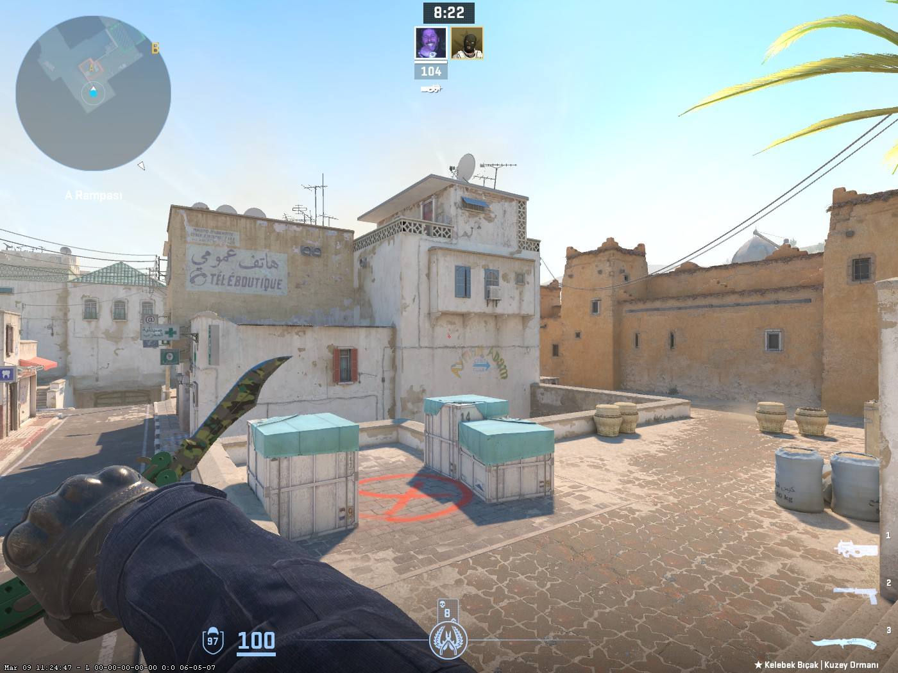
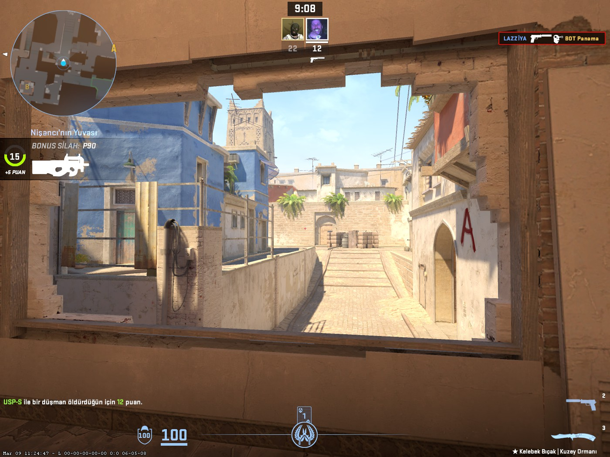
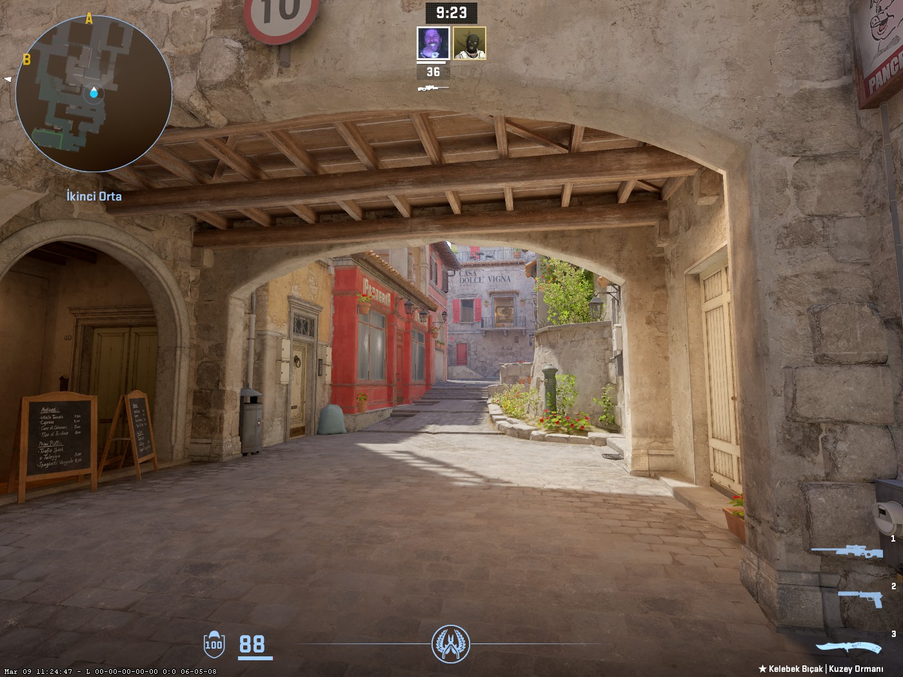
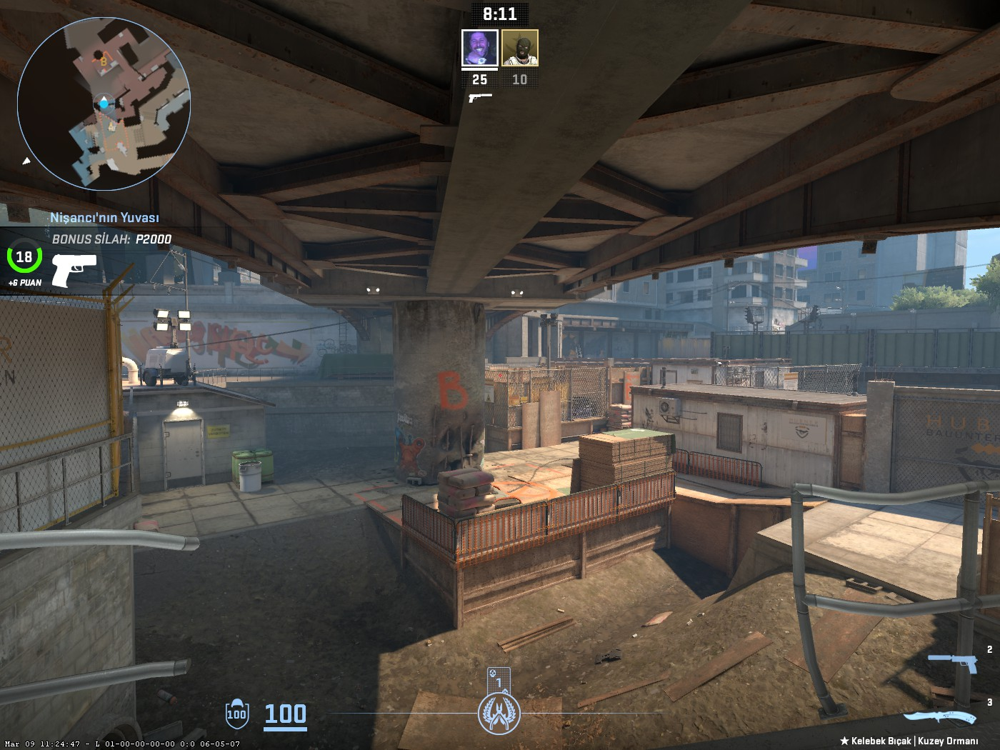

Counter Strike 2 oyununda farklı stratejiler gerektiren birçok rekabetçi harita bulunmaktadır. Her haritanın kendine özgü yapısı ve oyun tarzı vardır.
Dust2, Counter Strike serisinin en ikonik haritalarından biridir. Açık alanları ve uzun görüş mesafeleri sayesinde keskin nişancı silahları için oldukça uygundur.

Mirage profesyonel turnuvalarda en çok oynanan haritalardan biridir. Orta alan kontrolü ve takım koordinasyonu bu haritada oldukça önemlidir.

Inferno dar sokakları ve taktiksel oynanışı ile bilinir. Bomba alanlarına ulaşmak için takım koordinasyonu ve iyi bir savunma gerekir.

Overpass farklı seviyelerde bulunan yolları ve geniş harita yapısıyla dikkat çeker. Haritada kontrol sağlamak için iyi bir harita bilgisi gerekir.
